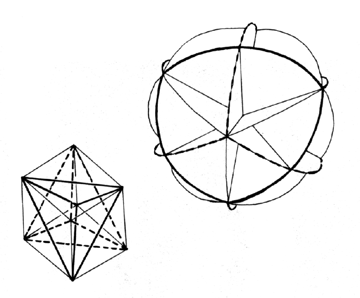

Fig. 454.01A The six great circles of the vector equilibrium disclose the spherical tetrahedra and the spherical cube and their chordal, flat-faceted, polyhedral counterparts.
Copyright © 1997 Estate of R. Buckminster Fuller